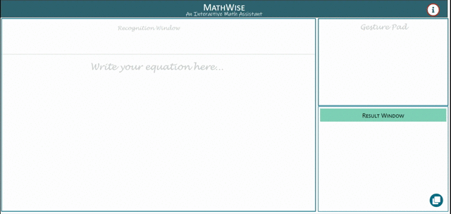
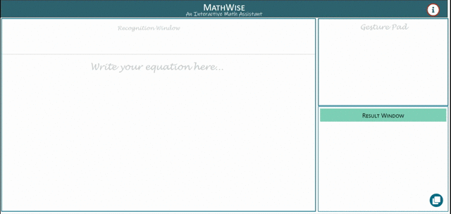
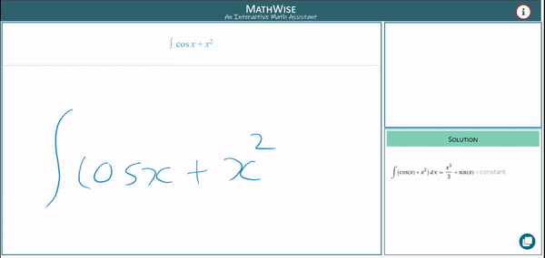
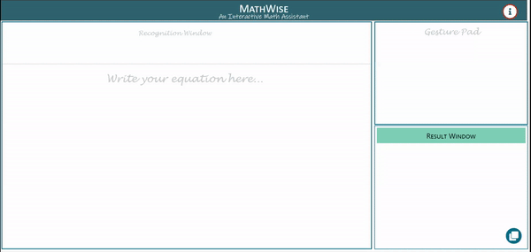

×
Gesture Help
- First, Write mathematical equation in Math Recognizer
- Then, Write = symbol in Gesture Pad
- On recognition, Solution is displayed in Result Window

- Write mathematical equation in Math Recognizer
- Write L symbol in Gesture Pad
- On recognition, latex format is displayed in Result Window

- Strikethrough part/whole equation in math recognizer to erase
- Write R symbol in the Gesture Pad to clear all sections on MathWise

- Write
<< /b> symbol to undo and > symbol to redo
